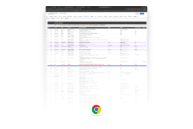

Live Schedule
--
--:--
当前窗口
读取执行总表中
--
今天时间线
执行总表
DIC 主会场
彩排计划
GLC Launch
Show Rundown
Cuesheet
物料与联系人
Full Action Plan
执行总表
来自 Excel 的 Full Action Plan。保留日期、时间、模块、地点、工作描述、BMBS、RECO、三方人员和备注。
| Date | Time | Stream | Task | Location | BMBS | RECO | Status |
|---|
Rehearsal
彩排计划
按 Excel 彩排计划拆出，重点看时间、项目、地点、工作描述、RECO/BMBS 和备注。
| Date | Time | Item | Work Description | Location | RECO | BMBS | Remark |
|---|
DIC Main Venue
DIC 主会场
DIC sheet 本身只有表头，明细从 Full Action Plan 里按主会场、大会、宴会厅、AV、同传、安检、导演和彩排关键词抽取。
| Date | Time | Stream | Task | Location | BMBS | RECO | Staff / Note |
|---|
GLC Launch
GLC Launch 执行表
从 GLC Launch sheet 拆出，聚焦路线复勘、接待物料、三方培训、现场彩排、座椅贴检查等任务。
| Date | Time | Item | Work Description | Location | RECO | Staff | Remark |
|---|
Run of Show
Show Rundown
会议 run of show，适合现场看节目段落、音频、视频、灯光和备注。
| Section | Time | Duration | Content | Audio | Video | Lighting | Remarks |
|---|
Cue Sheet
Cuesheet
按 show calling 使用方式拆成 VT、Graphic、LX、Audio、SM。保留原始 cue 顺序。
| No | Start | Duration | Session | Flow | VT | LX | Audio | SM |
|---|
Materials / Contacts
物料与联系人
Materials 和 Contact List 改为完整表格，不再只显示 Top 12。
| Area | Name | Vendor | Progress | Size | Material | Qty | Note |
|---|
| Project | RECO | Phone | ND |
|---|

Source Snapshot
Action plan_2026 DIC
Excel 已作为当前网站主数据源。截图保留为在线文档入口识别，不再作为页面主要内容。